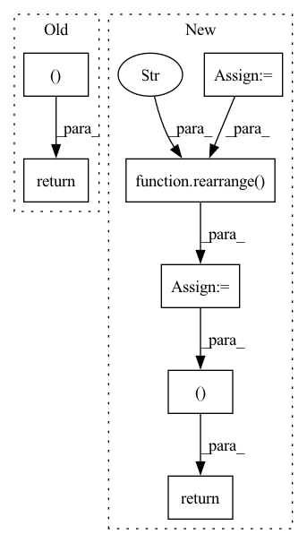

Pattern ID :39888
Before Change
N_mask = lengths%l_aa == 0
CA_mask = lengths%l_aa == 1
if boolean:
return N_mask, CA_mask
return N_mask.nonzero(), CA_mask.nonzero()
def nerf_torch(a, b, c, l, theta, chi):
Custom Natural extension of Reference Frame. After Change
wrapper = torch.zeros(*scn_seq.shape, 14)
// N is the first atom in every AA. CA is the 2nd.
wrapper[:, 0] = 1
wrapper[:, 1] = 2
wrapper[:, 2] = 3
wrapper = rearrange( wrapper, "... l c -> ... (l c)" )
// find idxs
N_mask = wrapper == 1
CA_mask = wrapper == 2
C_mask = wrapper == 3
if boolean:
return N_mask, CA_mask, C_mask
return N_mask.nonzero(), CA_mask.nonzero(), C_mask.nonzero()
def nerf_torch(a, b, c, l, theta, chi):
Custom Natural extension of Reference Frame. In pattern: SUPERPATTERN
Frequency: 3
Non-data size: 7
Instances Fragment ID: 113406663
Project Name: lucidrains/alphafold2
Commit Name: 1e5f99521575995589d1fbe94d2bd693f7e274c9
Time: 2021-03-03
Author: ericalcaide1@gmail.com
File Name: alphafold2_pytorch/utils.py
M Class Name: AnonimousClass
N Class Name: AnonimousClass
M Method Name: scn_backbone_mask(3)
N Method Name: scn_backbone_mask(3)
M Parent Class:
N Parent Class:
M File Name: alphafold2_pytorch/utils.py
N File Name: alphafold2_pytorch/utils.py
M Start Line: 189
M End Line: 198
N Start Line: 189
N End Line: 201
Before Change
output = t5(input_ids = input_ids, attention_mask = attn_mask)
encoded_text = output.last_hidden_state.detach()
return encoded_text, attn_mask.bool()
After Change
output = t5(input_ids = input_ids, attention_mask = attn_mask)
encoded_text = output.last_hidden_state.detach()
attn_mask = attn_mask.bool()
encoded_text = encoded_text.masked_fill(~rearrange( attn_mask, "... -> ... 1" ) , 0.) // just force all embeddings that is padding to be equal to 0.
if return_attn_mask:
return encoded_text, attn_mask
return encoded_text
Fragment ID: 113406661
Project Name: lucidrains/imagen-pytorch
Commit Name: ea599f6e377c2cbdd1086e6aadaadabbaed8285f
Time: 2022-07-11
Author: lucidrains@gmail.com
File Name: imagen_pytorch/t5.py
M Class Name: AnonimousClass
N Class Name: AnonimousClass
M Method Name: t5_encode_text(3)
N Method Name: t5_encode_text(2)
M Parent Class:
N Parent Class:
M File Name: imagen_pytorch/t5.py
N File Name: imagen_pytorch/t5.py
M Start Line: 80
M End Line: 80
N Start Line: 59
N End Line: 92
Before Change
mem_mask = F.pad(mem_mask, (0, n), value = True)
mems = self.mem_updater(mems, enc, mask = mem_mask, attend_self = True)
return out, mems
After Change
mem_mask = F.pad(mem_mask, (0, n), value = True)
updated_mems = self.mem_updater(mems, enc, mask = mem_mask, attend_self = True)
next_mems = self.gru(
rearrange(updated_mems, "b n d -> (b n) d"),
rearrange(mems, "b n d -> (b n) d")
)
next_mems = rearrange( next_mems, "(b n) d -> b n d" , b = b)
return out, next_mems
Fragment ID: 113406664
Project Name: lucidrains/memformer
Commit Name: ca43fff8efc8aa27d1a75aed1ed47f0085179b15
Time: 2020-10-29
Author: lucidrains@gmail.com
File Name: memformer/memformer.py
M Class Name: Memformer
N Class Name: Memformer
M Method Name: forward(4)
N Method Name: forward(4)
M Parent Class: nn.Module
N Parent Class: nn.Module
M File Name: memformer/memformer.py
N File Name: memformer/memformer.py
M Start Line: 205
M End Line: 212
N Start Line: 201
N End Line: 220